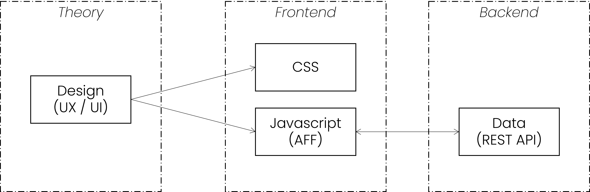

Aeonics Frontend Framework (AFF)
Introduction
This documentation is intended for developers, UX and UI designers, devops, fullstack engineers or whomever has sufficient background knowledge to understand it. It exposes various details about the Aeonics Frontend Framework system, the overall principles as well as the motivation behind some architectural software choices.
The content of this guide is protected by intellectual property rights and is subject to the Aeonics Commercial License Agreement. The information contained in this documentation is provided as-is without any guarantee of correctness nor any other sort, it is provided in good faith and is regularly checked and updated. If some content is not clear, outdated or misleading, please let us know and we will try to fix it. Some fine internal details are voluntarily omitted from this guide, if you need more information about a specific aspect, please contact us.
The form and language used in this guide is non-formal and intended for trained professionals, therefore some technical details may be omitted and/or the examples provided may not work or compile as-is. If you see ways to improve this guide or if you believe some notions would benefit from more details, please let us know.
The sections used in this guide are organized based on logical order, it is important to understand the key concepts before diving into the fine details because the approach and methodology promoted in this guide may seem unconventional. Aeonics focuses on efficiency which is defined as the ability to accomplish sufficient result with the least amount of effort, time or resources. Throughout this guide, we encourage you to focus on the most relevant functionalities first and keep your technical debt with those time-consuming details for later, if those ever occur.
Conventions
In this document, you will encounter different notations. Words highlighted in blue or orange are special keywords
that are important. Other words with a grey background means that it references a technical term or a code-specific keyword.
There are also some code samples or configuration bits that are displayed in separate blocks. The color and header of the block provides some context on how to read the content.
This block type contains JSON information
This block type contains Javascript code
This block type contains HTML code
This block type contains CSS code
This block type contains other unspecified information
This documentation is constantly evolving, so sections or paragraphs highlighted in yellow means that some additional content should be delivered soon...
Concepts
The AFF is designed to build web applications that interact with REST services through a Single Page Application (SPA). The SPA approach aligns with the Aeonics system concepts because it minimizes the amount of processing to be performed at the server side to render a page. The application is thus more fluid and can provide better user experience.
The concept of SPA implies that all the visual rendering and the user interactions are managed at the frontend level. This means that the logical construction of the application is performed by the frontend whilst the backend only provides raw data content.
HTML is an XML construct that is interpreted by the browser, it works in par with Javascript and CSS. By abstracting all DOM creation and manipulations in Javascript, we minimize the use of HTML to work with their (programming) object counterpart.
There are many existing frontend frameworks such as React, Angular or Vue.js so why propose AFF ?
- Customizability: Some developers may want more control over the design and functionality of their website or application, and using an existing framework may not allow them to fully customize it to their liking easily.
- Performance: Some existing frameworks can be quite large and complex, and using them can result in slower performance or less efficient code.
- Learning curve: Depending on the framework, there may be a steep learning curve involved in using it, which can be a deterrent for some developers. Often, frameworks may require specific skills independent from the underlying programming language.
- WYWIWYR: Many frameworks will require to proceed through a compilation step that will generate the output JS/CSS. This means that the code that you write is harder to troubleshoot and requires either a specific development environment or a continuous integration system which will slow down your ability to see reflected changes in real time, which is particularly helpful for frontend applications.
The AFF is therefore extremely light, close to native Javascript, and compatible with all modern browsers without intermediate steps. It will focus on managing the DOM in a similar fashion to how HTML is working. It means that there are no custom components or high level classes that will complexify your understanding of how the page is being rendered.

The wireframe and behavior of the frontend is typically designed by the UX/UI team to model what the application should look like. This design is then translated into CSS that will focus on the visual aspect of elements, and Javascript that will organize these elements and manage the user interactions. The Javascript part is built using the AFF and will interact with the Aeonics backend system to fetch data to render or send other data as required.
Architecture
A typical web application built with AFF will be composed of 3 components: one HTML entry point, CSS files for styling, and the Javascript business logic: one file per view. There is no need to create services, custom router logic, partial views that will mix Javascript with HTML and CSS, other custom components and such. The goal is to Keep It Simple Stupid (KISS). The framework contain the fundamental blocks that you will need to build any web application, and you may create your own classes or utilities if required although it is not mandatory.
The file structure is as follows:
- index.html : this is the web app entry point
- css : this folder contains all the CSS files
- js : this folder contains all the javascript files
- locale : this folder contains the translations in different languages
- pages : this folder contains the javascript for each page view
- img : this folder contains all the images and other assets
You may create other folders as required to translate the design of the application into a usable web app. Although remember to keep it as simple and intuitive as possible.
HTML Entry Point
There is only one required entry point, one web application implies only one HTML page. Although, multiple web applications may coexist to provide complementary information.
I.e.: one web app for the public website and one web app for the private area. These are 2 different web applications although they form a whole.
The minimum requirement for the entry point is to require the App module. If you want to specify other meta tags, feel free to
adjust the HTML of this entry point by providing a page title or enabling PWA.
<!DOCTYPE html>
<html>
<head>
<script type="module">
import('./js/ae.js').then(({default: ae}) =>
{
ae.ready.then(() => { ae.require('App'); });
});
</script>
</head>
<body></body>
</html>
CSS files
The AFF includes several default CSS files placed in the css folder. For a better understanding, the core CSS
files are prefixed with ae. and page specific styles are prefixed by page..
Meanwhile, you can use your preferred conventions. None of the default CSS files are mandatory, those are provided for convenience as a starting point.
- ae.app.css: this stylesheet is used by the App module and contains the base elements.
- ae.modal.css: this stylesheet is used by the Modal module to display popups to the user.
- ae.notify.css: this stylesheet is used by the Notify module to display notifications.
- ae.tab.css: this stylesheet can be used to display tabs in the application.
- page.login.css: this stylesheet is optionally used to display the login page.
- page.template.css: this stylesheet is optionally used to display the basic app layout.
Remember, we do not write HTML. Thus, you can include CSS files using the AFF in Javascript:
// this will load the file from the /css folder
ae.require('page.foo.css');
// this will include any URL provided
ae.require('http://example.com/foo.css');
It will return a Promise that will resolve when the file is loaded.
Javascript files
Javascript files are included in the form of standard Javascript modules. The main classes are located directly in the /js folder.
Then, each view (page) of the application is loaded from a matching Javascript file in the /js/pages folder.
This way, you will never ever wonder which file is responsible for which page of the application.
I.e.: the URL /#customer will automatically include the file /js/pages/customer.js.
If there are sub-path components in the URL, it will load the matching file /#app/foo/bar will load the file /js/pages/app/foo/bar.js.
Each page should import its own dependencies, the framework will ensure that these will only be loaded once and only when required. You can include Javascript files like this:
// this will load the file /js/App.js
ae.require('App');
If your dependencies also have their own dependencies, those will be loaded automatically. This will ensure that you only care for what you use explicitly.
Page construction
The DOM is composed of HTML tags called nodes. This is totally unrelated to Node.js.
The goal of the AFF is to create and manipulate nodes to render the page dynamically. The AFF therefore uses the Node class to mimic the HTML notation. A node has a tag name, some attributes and event listeners, and finally some content.
The AFF Node class will return a true native HTMLElement, so all standard Javascript behavior applies just as if the node was created using document.createElement().
<p class="foo">bar</p>
Node.p({className: 'foo'}, 'bar');
When an attribute is a function, it means that it is an event listener. This is the equivalent of addEventListener():
<p class="foo" onclick="foo();">bar</p>
Node.p({className: 'foo', click: function() { foo(); }}, 'bar');
Nodes can have child elements too, this is just a shortcut to appendChild(). If a child element is an array, it is unfolded.
<p class="foo"> <span>text1</span> <span>text2</span> </p>
Node.p({className: 'foo'}, [
Node.span("text1"),
Node.span("text2"),
]);
Node.p([
"Some",
Node.span("content:"),
[1,2,3].map((e) => { return Node.span("Number "+e); })
]);
<p> Some <span>content:</span> <span>Number 1</span> <span>Number 2</span> <span>Number 3</span> </p>
That's about it! Now you have the ability to easily and concisely manipulate the page rendering based on your input data. The behavior is as intuitive as possible and matches closely the output HTML using plain standard and lightweight Javascript native browser objects.
var ul = Node.ul();
for( var i = 0; i < 10; i++ )
ul.append(Node.li("Item " + i));
Inline CSS
It is recommended to use class names and CSS selectors as much as possible to avoid mixing the logical page construction with how it is displayed. However, if you need to specify some inline style definitions, you can specify it just like a sub-attribute.
Node.p({style: {fontSize: '3em'}}, 'text content');
Dataset
You will very often need to remember some data associated with a DOM node. You can use the standard dataset property of the nodes to store String values. For performance reasons, avoid storing too much data in the element dataset and avoid caching too much data in Javascript. Favor multiple calls to the REST API to retreive the latest information when needed.
var p = Node.p({dataset: {foo: 'bar'}}, 'text content');
p.dataset.foo; // 'bar'
Fetching data
The principle of a Single Page Application is to fetch and send data in the background and refresh only relevant sections of the same page.
The AFF Ajax class provides a simple way to interact with the Aeonics REST API:
Ajax.get('/api/endpoint').then((result) =>
{
var data = result.response;
}, (error) =>
{
var code = error.status;
});
Ajax.post('/api/endpoint', {data: form}).then((result) =>
{
// ok
}, (error) =>
{
// not ok
});
The second argument of the Ajax methods accepts the following parameters:
- method: the HTTP method to use.
- timeout: the number of milliseconds a request can take before automatically being terminated.
- withCredentials: whether or not cross-site requests should be made using credentials such as cookies or authorization headers.
- mimeType: the MIME type to be used when interpreting the response.
- responseType: how to interpret the response. It may be necessary to specify the value
blobwhen downloading documents. - noCache: if true, the current timestamp will be appended to the request using the
vparameter. - headers: a list of custom headers.
- user: if set, it will send the
Authorization: Basicheader. - password: if set, it will send the
Authorization: Basicheader. - data: the request parameters to send. It can be a Javascript ket/value pair object, in case of POST requests, it can be an HTML form element, or a plain string to send as-is (i.e.: JSON).
Translations
The web is international by nature, it is important to localize the textual content to match the user language. Meanwhile, it is a real pain
to provide the same content in multiple languages. To that end, the AFF includes the Translator class that will lookup
sentences in the /js/locales folder by keywords.
At the start of the application, the translator will try to guess the user preferred language based on the cookies or the browser language. If the language could not be identified, it will fallback to English (en). This is why an English translation should always be provided.
The translator will load the specified file from a folder that matches the locale:
Translator.locale; // discovered language: 'fr'
// will load /js/locales/fr/my_translations.js
Translator.load('my_translations');
// if that file does not exist, it will try to load it in 'en': /js/locales/en/my_translations.js
A translation file is as simple as a Javascript object (or JSON):
export default {
'translation_key': "The translated value, it <em>may</em> contain HTML too.",
'hello': "Bonjour {}"
}
To get the translated text, you can use the Translator.get() method. The first argument is the translation key, and all remaining arguments
will replace the {} in the text in order of appearence.
var text = Translator.get('hello', 'Diego'); // 'Bonjour Diego'
Popups
The default browser prompt windows have limited capabilities, can barely be styled, and will block the background execution of the page. Therefore, we need to offer the same capabilities in a user-friendly way.
The AFF Modal class has various methods to manage popup elements within the application:
Modal.alert("Sample message");
Multiple popups can be stacked when necessary, and you can customize the content entirely using the custom() function.
The return value is a Promise that will resolve when the popup is closed, and that you can manually resolve using the ok() method,
or reject with the nok() method.
var m = Modal.custom(Node.p("foo"));
m.then(() => { /* closed */ });
m.ok(); // will close the popup successfully
The returned Promise also contains a dom property that is the HTML element of the popup. This might be handy in some cases.
Notifications
It is important to provide some feedback to the users about what is going on and inform them about the status of any operation.
To that end, the AFF uses the Notify class and a special .wait CSS selector.
Wait
When an operating is in progress (rendering or waiting for an Ajax request to complete), you should add a class name to
the area or container in which the content will appear. When the .wait CSS class name is added to an element, its content will be entirely hidden
and user interactions will be prevented. The user has nothing else to do other than wait, explicited by a visual indication (spinning wheel).
var div = Node.div();
div.classList.add('wait');
setTimeout(() => { div.classList.remove('wait'); }, 5000);
If you need to block the entire screen to prevent the user from clicking-frenzy all around, you can either apply the .wait class on the
entire document, or use a Modal popup.
document.classList.add('wait'); // will block the entire page but may not be very user-friendly
setTimeout(() => { document.classList.remove('wait'); }, 5000);
var m = Modal.custom(Node.div({className: 'wait'}), false); // more user friendly
setTimeout(() => { m.ok(); }, 5000);
Feedback
When an operation happens in the background, it is preferable to provide some feedback to the user about the completion or failure. The AFF has a default friendly notification mechanism that is very easy to trigger:
if( success ) Notify.success("Operation complete");
else Notify.error("Operation failed");
You can refer to the Notify class for more possibilites.
Classes
The AFF is very concise and includes only a few classes to work with as well as one generic bootstraper to start the system.
ae
This is the main bootstraper file that should be included in the HTML entry point.
Events
It registers three useful events at the document level:
- enter: triggered when the
enter(13) key is pressed. - escape: triggered when the
esc(27) key is pressed. - delete: triggered when the
del(46) key is pressed.
Extensions
It will also add a last getter on the Array object which will simplify the way to retreive the last element of an array.
var last = ["foo", 42, "bar"].last; // "bar"
Methods & Properties
It will register the ae object at the global level with the following members:
- ready: a Promise that will resolve when the document is in the
completeready state. This is used in the main HTML entry point. - require(...modules): will load the specified Javascript and CSS files and return a Promise that will resolve when all are loaded.
The promise result will contain an array of all specified modules. The loaded modules are not visible outside of the function scope.
ae.require('Translator', 'style.css').then(([Translator]) => { // the Translator module will be loaded from /js/Translator.js and the class will be mapped to the Translator variable // the style.css file will be loaded from /css/style.css and will not be mapped to a local variable (useless) Translator.get('foo'); }); Translator.get('bar'); // error: Translator is unknown here because it is outside the function scopeIf you require multiple classes, they will be available in order as such:
ae.require('App', 'Page', 'Notify').then(([App, Page, Notify]) => {});
> < & " by their HTML entities equivalent.
// url: /path?a=b#page?c=d
var a = ae.urlValue('a'); // -> 'b'
var c = ae.urlValue('c'); // -> 'd'Ajax
This class can be used to fetch or send data in the background. It will return a Promise that will resolve or reject based on the result of the operation.
Usage
You can import this class using the ae.require() method.
ae.require('Ajax').then(([Ajax]) => {
Ajax.post('/url');
});
Methods & Properties
- get(url, options): this method is a shorthand for
fetch()with the method set toGET. - post(url, options): this method is a shorthand for
fetch()with the method set toPOST. - put(url, options): this method is a shorthand for
fetch()with the method set toPOST. - delete(url, options): this method is a shorthand for
fetch()with the method set toPOST. - fetch(url, options): performs a background asynchronous request using
XMLHttpRequest. See Fetching data for more details. - authorization: if set, this is the default
Authorizationheader value that will be sent for every request.
App
This class will automatically setup the page navigation system and start the application. The following steps are performed in order:
- Register the
hashchangehandler to load pages automatically. - Load the
loginpage (/js/pages/login.js). If the login page does not exist, proceed to next step. If the login page exists, proceed only when the page show Promise resolves (see Page). This is the opportunity to require a login before loading any additionnal content. The template page will not be loaded yet. - Load the
templatepage (/js/pages/template.js). If the template page does not exist, proceed to next step. If the template page exists, proceed only when the page show Promise completes (resolve or reject). This is the opportunity to build the overall application layout and set the main page container (see Page). - Navigate to the requested page based on the URL hash. If no URL hash is specified, it will fallback to the
homepage (/js/pages/home.js).
Usage
You should not use this class manually, it should be loaded only once in the main HTML entry point. Although, it is recommended to include the
ae.app.css stylesheet initially too.
Methods & Properties
- current: a reference to the current page being displayed. You should not set this property manually.
- container: the root HTML element in which pages should be rendered. The application container is typically defined in the template page
/js/pages/template.jswhich is automatically loaded by theAppclass.
Modal
This class can be used to create popup windows.
Usage
You can import this class using the ae.require() method and include the default stylesheet.
ae.require('Modal', 'ae.modal.css').then(([Modal]) => {
Modal.alert('foo');
});
Methods & Properties
- alert(message): shows a popup with the specified message and a single OK button to close it.
The message can be text content, a single Node, or an array of Nodes.
The popup is not escapable (see
custom). The return value is a Promise that resolves when the user clicks the button.Modal.alert('foo').then(() => { }); - confirm(message, buttons, escapable): shows a popup to force the user to choose between any of the provided options.
The message can be text content, a single Node, or an array of Nodes.
The buttons must be an ordered array of labels to display as buttons. If not set,
OKandCANCELare used. The popup can be made escapable (seecustom) but it is not by default. The return value is a Promise that resolves with the index of the button clicked (0 = first button, 1 = second button,...).Modal.confirm('foo', ).then((index) => { }); - prompt(message, form): shows a popup to collect data from the user.
The message can be text content, a single Node, or an array of Nodes.
The form can be a
<form>HTML element or a single default value that will be presented to the user in a text field. The popup will expose oneOKbutton and oneCANCELbutton. The popup is escapable (seecustom) as if the user clicked on the cancel button. The return value is a Promise that will resolve with the<form>or will reject upon cancellation.Modal.prompt('foo', 'default_value').then((form) => { }); - custom(nodes, escapable): shows a custom popup.
The nodes property can be text content, a single Node, or an array of Nodes.
The escapable property specifies if the user can close the popup either by clicking the cross in the top-right corner, by clicking
outside of the popup area, or pressing the escape key.
The return value is a Promise that resolves when the popup is closed by invoking the
ok()method, or that rejects if the popup is closed by invoking thenok()method (or if the popup is escaped). The returned Promise contains also adomproperty which is the underlying HTML element of the popup.var popup = Modal.custom('foo', false); popup.ok(); // close the popup
Node
This class is a shorthand to construct browser native HTML elements. It allows for a concise and intuitive syntax that mimics the HTML notation.
It is recommended that you use the Node class to construct the page rendering. Most used HTML tags have a dedicated function, for other tags, you can use the
create() function.
Usage
You can import this class using the ae.require() method.
ae.require('Node').then(([Node]) => {
Node.div('foo');
});
Methods & Properties
- a(attributes, content): creates a
<a>HTML element with the specified attributes and content (seecreate()). - aside(attributes, content): creates a
<aside>HTML element with the specified attributes and content (seecreate()). - br(attributes, content): creates a
<br>HTML element with the specified attributes and content (seecreate()). - button(attributes, content): creates a
<button>HTML element with the specified attributes and content (seecreate()). - canvas(attributes, content): creates a
<canvas>HTML element with the specified attributes and content (seecreate()). - checkbox(attributes, content): creates a
<input>HTML element of typecheckboxwith the specified attributes and content (seecreate()). - circle(attributes, content): creates a SVG
<circle>HTML element of typecheckboxwith the specified attributes and content (seecreate()). - code(attributes, content): creates a
<code>HTML element with the specified attributes and content (seecreate()). - defs(attributes, content): creates a SVG
<defs>HTML element with the specified attributes and content (seecreate()). - div(attributes, content): creates a
<div>HTML element with the specified attributes and content (seecreate()). - em(attributes, content): creates a
<em>HTML element with the specified attributes and content (seecreate()). - fieldset(attributes, content): creates a
<fieldset>HTML element with the specified attributes and content (seecreate()). - footer(attributes, content): creates a
<footer>HTML element with the specified attributes and content (seecreate()). - form(attributes, content): creates a
<form>HTML element with the specified attributes and content (seecreate()). - h1(attributes, content): creates a
<h1>HTML element with the specified attributes and content (seecreate()). - h2(attributes, content): creates a
<h2>HTML element with the specified attributes and content (seecreate()). - h3(attributes, content): creates a
<h3>HTML element with the specified attributes and content (seecreate()). - h4(attributes, content): creates a
<h4>HTML element with the specified attributes and content (seecreate()). - header(attributes, content): creates a
<header>HTML element with the specified attributes and content (seecreate()). - hr(attributes, content): creates a
<hr>HTML element with the specified attributes and content (seecreate()). - img(attributes, content): creates a
<img>HTML element with the specified attributes and content (seecreate()). - input(attributes, content): creates a
<input>HTML element with the specified attributes and content (seecreate()). - label(attributes, content): creates a
<label>HTML element with the specified attributes and content (seecreate()). - li(attributes, content): creates a
<li>HTML element with the specified attributes and content (seecreate()). - linearGradient(attributes, content): creates a SVG
<linearGradient>HTML element with the specified attributes and content (seecreate()). - main(attributes, content): creates a
<main>HTML element with the specified attributes and content (seecreate()). - nav(attributes, content): creates a
<nav>HTML element with the specified attributes and content (seecreate()). - ol(attributes, content): creates a
<ol>HTML element with the specified attributes and content (seecreate()). - option(attributes, content): creates a
<option>HTML element with the specified attributes and content (seecreate()). - p(attributes, content): creates a
<p>HTML element with the specified attributes and content (seecreate()). - path(attributes, content): creates a SVG
<path>HTML element with the specified attributes and content (seecreate()). - pre(attributes, content): creates a
<pre>HTML element with the specified attributes and content (seecreate()). - radio(attributes, content): creates a
<input>HTML element of typeradiowith the specified attributes and content (seecreate()). - section(attributes, content): creates a
<section>HTML element with the specified attributes and content (seecreate()). - select(attributes, content): creates a
<select>HTML element with the specified attributes and content (seecreate()). - span(attributes, content): creates a
<span>HTML element with the specified attributes and content (seecreate()). - stop(attributes, content): creates a SVG
<stop>HTML element with the specified attributes and content (seecreate()). - strong(attributes, content): creates a
<strong>HTML element with the specified attributes and content (seecreate()). - svg(attributes, content): creates a
<svg>HTML element with the specified attributes and content (seecreate()). - table(attributes, content): creates a
<table>HTML element with the specified attributes and content (seecreate()). - tbody(attributes, content): creates a
<tbody>HTML element with the specified attributes and content (seecreate()). - td(attributes, content): creates a
<td>HTML element with the specified attributes and content (seecreate()). - text(attributes, content): creates a SVG
<text>HTML element with the specified attributes and content (seecreate()). - textarea(attributes, content): creates a
<textarea>HTML element with the specified attributes and content (seecreate()). - th(attributes, content): creates a
<th>HTML element with the specified attributes and content (seecreate()). - thead(attributes, content): creates a
<thead>HTML element with the specified attributes and content (seecreate()). - tr(attributes, content): creates a
<tr>HTML element with the specified attributes and content (seecreate()). - ul(attributes, content): creates a
<ul>HTML element with the specified attributes and content (seecreate()). - create(tag, attributes, content): creates a native HTML element of the specified tag name. The attributes parameter should be a Javascript object with the node's attributes and event handlers. The content parameter should be either a string that is interpreted as the innerHTML (be careful to Escaping), or an HTML element, or an array of elements. See Page construction for more details.
Notify
This class can be used to display some feedback to the user about the status of a background operation. The notification disapears automatically after 3 seconds and multiple notifications can be shown at the same time. Using the default provided style, notifications appear in the bottom left corner.
Usage
You can import this class using the ae.require() method and include the default stylesheet.
ae.require('Notify', 'ae.notify.css').then(([Notify]) => {
Notify.success('Operation complete');
});
Methods & Properties
- info(message): shows a notification with the provided message using
infolevel.Notify.info("Welcome back"); - warning(message): shows a notification with the provided message using
warninglevel.Notify.warning("Please fill all the fields"); - success(message): shows a notification with the provided message using
successlevel.Notify.success("Saved"); - error(message): shows a notification with the provided message using
errorlevel.Notify.error("Operation failed"); - show(message, level): displays the specified message in a notification. The goal is only to provide some feedback to the user.
If the notification is clicked, it disapears. If the notification is hovered, it stays still. Otherwise it disapears after 3 seconds.
The notification level is the CSS class name that will be applied to the notification, you can style any level of your choosing.
Notify.show("Foo bar", "debug");
Page
Pages are views of the application that are loaded automatically by the App class. In order to implement a view, you should
extend the base Page and place it in a specific file in the /js/pages folder.
A page is a <section> HTML element that is appended to the App.container element.
The page loading mechanism happens in the following order:
- If there is a previous page displayed, its
hide()method is called. Upon completion, the previous page'sdomis removed from the application container. - The current page's
show()method is called, this is where you should build or refresh the elements of the page to display. Upon completion, the page'sdomis appended to the application container. - If another page is requested, the process repeats.
Usage
You can import this class using the ae.require() method. If your own page requires specific styling, include it too.
A custom page should use the following snippet:
let ae = globalThis.ae;
var x = new Promise((ok, nok) =>
{
ae.require('Page', 'page.custom.css').then(([Page]) =>
{
var page = new Page();
Object.assign(page,
{
show: function() { ... },
hide: function() { ... }
});
ok(page);
}, (e) => { nok(e); });
});
export { x as default };
Methods & Properties
- dom: this property is read-only. It represents the page
<section>that will be displayed in the application. You can append your own elements to it to render the view to your liking. - show(): this method is called before the page
domis added to the application. You should construct the page rendering in this function. The function should return a Promise that resolves when the view is ready to be displayed. - hide(): this method is called before the
domis removed from the application. You may implement your own cleanup mechanism in this fuction. The function should return a Promise that resolves when this page is ready to be removed.
Translator
This class can be used to load translation files and retreive the text associated with a keyword. See Translations for more details.
Usage
You can import this class using the ae.require() method.
ae.require('Translator').then(([Translator]) => {
Translator.get('foo');
});
Methods & Properties
- locale: the locale of the user (2 lower case characters: 'en', 'fr', 'es', ...).
var locale = Translator.locale;
- load(name): loads a translation file from the
/js/locales/[locale]/folder depending on the locale of the user. If the specified file does not exist for the user locale, an attempt is made to load the same file inen.Translator.load('foo'); // will load /js/locales/[locale]/foo.js - append(translation): adds some translations to the active set. The translation parameter must be a key/value pair object.
Translation.append({'key': 'value'}); - get(key, ...): retreives the translation of the specified key in the current loaded
Translator.locale. The value may contain{}placeholders that will be substituted with the additionnal parameters provided, in order.var text = Translator.get('foo', 'bar'); // "Hello {}" -> "Hello bar" - change(locale): sets the user prefered locale in the cookie and reloads the application entirely.
Advanced
Scope
Function enclosing scope can be challenging in Javascript. The this keyword might not be the expected object when dealing with event listeners.
For this reason, we are personally using the variable name self to refer to the enclosing class. It helps identify if we are refering to
the node itself or the class in which it was defined.
class Example {
foo() {
var self = this; // self = Example class
Node.p({click: function(event) {
this.className = 'clicked'; // this = p node
self.bar(); // self = Example class
});
}
bar() { }
}
Escaping
Do not ever ever display the content of user input or value from a REST API directly in HTML because it could contain XSS or other undesirable content.
When you need to display text content, you should either use the ae.safeHtml() method, or include it in the .textContent of the element.
You should avoid at all cost to set the innerHTML property.
var attack = "</div><script>..."; var div = Node.div(ae.safeHtml(attack)); div.textContent = attack;
Additionnally, if you need to display informative content (i.e.: error text) originating from a REST API, you should ideally use a translation. This is because the backend is agnostic of the user language and will most probably respond in engligh using technical terms which may not be the preferred way to communicate with the user. This means that the REST API should return well-known values so that frontend applications have a limited set of translations to provide.
Ajax.get('/url').then((result) => { }, (error) =>
{
Notify.error(Translator.get(error.response.cause));
});
Preloading
The AFF will load dependencies and CSS files automatically from the list of require()'d elements.
Although, the dependencies of a page can only be known once it has loaded, which will most likely introduce some delay in order to completely
load all dependencies.
Therefore, it is preferable to repeat the known intermediate dependencies in your own pages (just in case) and force a preload in the main HTML entry point. Even if only the App is required by default, it may be a good idea to load necessary common resources as early as possible.
<!DOCTYPE html>
<html>
<head>
<script type="module">
import('./js/ae.js').then(({default: ae}) =>
{
// preload css
ae.require('ae.app.css', 'ae.modal.css', 'ae.notify.css', 'page.login.css', 'page.template.css').catch(() => {});
ae.ready.then(() =>
{
// preload classes
ae.require('Translator', 'Cookie', 'Modal', 'Node', 'Notify', 'Ajax', 'Page', 'App').then(([Translator]) =>
{
// preload locales
Translator.load('default');
});
});
});
</script>
</head>
<body></body>
</html>
Example
Here is an example of a page view that fetches a list of customers from a REST endpoint. When the refresh button is clicked, the page content refreshes dynamically. The REST API returns customer data in the following form:
[
{id: 1, name: "Diego"},
{id: 2, name: "Foo"},
{id: 3, name: "Bar"}
]
The requirement is to display the list of customers in a <ul> element and also have a refresh <button> to reload the list.
- The
show()function will check if the page is initialized and force a refresh. - The
init()function will construct the basic layout and add it to the pagedom. It is initially empty. - The
refresh()function will clear the list content, load data and add one list item for each customer. - There is no need for the
hide()function in this case.
let ae = globalThis.ae;
var x = new Promise((ok, nok) =>
{
ae.require('Page', 'Node', 'Ajax', 'Translator', 'Modal', 'Notify', 'page.example.css').then(([Page, Node, Ajax, Translator, Modal, Notify]) =>
{
var page = new Page();
Object.assign(page,
{
show: function()
{
// if the page has never loaded, construct some default wireframe
if( this.dom.children.length == 0 ) this.init();
// refresh the content but allow the promise to return directly
var self = this;
setTimeout(function() { self.refresh(); }, 1);
return Promise.resolve();
},
init: function()
{
// construct the wireframe with no content. The refresh() method will insert content in the list.
var self = this;
this.dom.append(
Node.button({click: () => { self.refresh(); }}, Translator.get('refresh')),
Node.ul({id: 'customer_list'})
);
},
refresh: function()
{
// add a wait indication to the list
var ul = this.dom.querySelector('#customer_list');
ul.classList.add('wait');
// remove all previous content
while( ul.firstChild ) ul.lastChild.remove();
// get the list of customers from the REST API
var self = this;
Ajax.get('/api/customer/list').then((result) =>
{
// add all customers to the list
result.response.forEach((customer) =>
{
ul.appendChild(Node.li({dataset: {id: customer.id}},
[
Node.p(ae.safeHtml(customer.name))
]));
});
// remove the wait indication
ul.classList.remove('wait');
}, (error) =>
{
// display an error notification
Notify.error(Translator.get('failed'))
div.classList.remove('wait');
});
}
});
ok(page);
}, (e) => { nok(e); });
});
export { x as default };